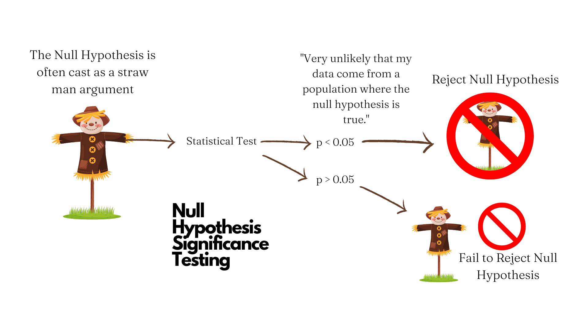

14 Some Statistical Preliminaries
Before we can proceed with understanding a pivotal moment in the history of Research Transparency & Reproducibility, let’s make sure we’re on the same page with some statistical preliminaries. These are some basic concepts in classical or frequentist statistics that are foundational. They are highly relevant to the data analysis we will be performing in R, but also to the way data analysis is conducted, and the problems therein. Even if you have taken an introductory statistics course or higher, this should still be a useful review, as many basic statistical concepts are frequently misunderstood, even by experts.
If you read the paragraph above, you might be wondering why I made the words classical or frequentist statistics in bold. This is because the way most folks have been doing statistics for the last century or so is based on a framework of inference based on long-run probabilities (also called frequencies). What does this mean in practical terms? Essentially, the philosophical approach to probability is premised on the assumption of repeated sampling from the population, or repeating the study again and again (to infinity).
The statistics we will be discussing in this course are all based on the frequentist paradigm, because that is still the way most scientists do statistics, and it’s definitely worth knowing. If you are interested, an alternative approach to probability that pre-dates the frequentist paradigm, and is recently gaining a lot of ground across the sciences is the Bayesian paradigm, stemming from a theorem by English Presbyterian minister and statistician Thomas Bayes (1701 - 1761). In the Bayesian approach, probability is related to our degree of belief in something happening. If we are trying to estimate a parameter (let’s say the average height of all Swedes), the Bayesian approach treats this parameter as a random variable, and estimates of this parameter are influenced by our prior knowledge of Swedes’ height. In the frequentist approach, the parameter we are trying to estimate is fixed, and we can eventually estimate it given enough studies sampling from the population of Swedes.

While an introduction to Bayesian statistics is outside the scope of this book, some of my favorite books on the subject are Doing Bayesian Data Analysis by John Kruschkeand Statistical Rethinking by Richard McElreath.
14.1 Null Hypothesis Significance Testing
Next, let’s either remind ourselves (if you’ve taken a statistics course before) what is commonly referred to as Null Hypothesis Significance Testing (NHST). NHST is a method of statistical inference in which you test the thing you think will happen in relation to a straw-man hypothesis usually corresponding to the notion “Nothing is going to happen.” Let’s break down how it works.
When we talk about statistical hypothesis testing, we typically have two competing hypotheses:
- The Null Hypothesis (H_0) typically suggests that there is no difference between two quantities or groups on some meaningful parameter. For example, if I’m running a study to test the efficacy of a new vaccine on a new disease, my null hypothesis is that is no effect of the vaccine on the disease.
- The Alternative Hypothesis (H_A) is typically what we are trying to assert or explore. To use the above example, my alternative hypothesis would be that the new vaccine has a non-zero effect on the new disease.
If the sample data provide enough evidence against the null hypothesis, we say that we reject the null hypothesis in favor of the alternative hypothesis. If the sample data not provide enough evidence against the null hypothesis, we say that fail to reject the null hypothesis. Note that we can NEVER say that we accept the null hypothesis.
How do we judge if the data provide evidence for the hypothesis? The method of NHST involves the computation a test statistic, or number that quantifies how close the data match the distribution implied by the null hypothesis (this is commonly a normal or Gaussian distribution). The test statistic allows for the calculation of a p-value, or probability of observing a test statistic at least as extreme or more extreme as the one observed, assuming the null hypothesis true.1 2 If the p-value is less than a particular threshold (typically 0.05, or a one-in-twenty chance, and denoted by the Greek letter alpha \alpha), then we can say that the p-value is statistically significant. This is illustrated in Figure 14.1.

In short, we assume the null is true and are trying to find evidence against it, so our decision is always framed in terms of rejecting or failing to reject the null hypothesis. On a more fundamental level, the idea here is that you cannot prove a negative. If your sample data do not support the null hypothesis, you have only shown that and just that. You have not shown that null hypothesis is true. It might be true (and indeed we assume it is when doing the tests), but your study is not exploring its verity, rather your study is trying to find evidence that contradicts the null. It is a sort of proof by contradiction.
14.2 P-Value
It’s important that we have a VERY clear definition of a p-value, as this is commonly misunderstood. Let’s use the American Statistical Association’s definition of the p-value.
Informally, a p-value is the probability under a specified statistical model that a statistical summary of the data (e.g., the sample mean difference between two compared groups) would be equal to or more extreme than its observed value.3
Does that sound confusing to you? If so, you’re not alone! Defining the p-value accurately doesn’t make it very clear. I think a more intuitive definition of a p-value is an index of surprise. So, if the p-value is very low, that means your results are surprising assuming the null hypothesis is true, and worthy of a second-look. Something may be going on, but the p-value does not give you definitive proof of anything. In fact, that’s how p-values were originally intended to be used, over a century ago (Are my results worthy of a second look?), and this idea has been lost over time.4 Another idea that has been lost over time is the null hypothesis doesn’t have to be a straw man hypothesis of zero effect or association between variables, but could actually be any test hypothesis.5 It should probably not have been called null, as that’s likely why people took it to mean zero or nothing.
As important as it is to know what the correct definition of a p-value is, it’s also important to understand what is p-value is NOT.
P-Values do not measure the probability that the hypothesis under study is true. So, don’t base your conclusions solely on whether an association is statistically significant or not.
P-Values do not measure the probability that the data were produced by chance alone. So, don’t think that the p-value gives you the probability that the observed association was produced by chance alone.
P-Values do not measure the size of an effect, nor the importance of a result. So, don’t base important decisions on whether a test of an association or effect passes an arbitrary threshold \alpha.
By themselves, p-values do not provide a good measure of evidence for a model or hypothesis. So, don’t believe an association or effect isn’t there just because you didn’t find it.
The p-value is also affected by the sample size and effect size. Generally, a larger sample size have a higher likelihood of detecting a statistically significant result if there is one. Additionally, a large effect is more likely to be detected than a smaller one.
Ok, so that’s a lot of DON’Ts. You might be wondering, Well what should I do then? To answer this question, we can use the helpful acronym ATOM: Accept uncertainty, be Thoughtful, Open, and Modest.4 Basically, use the p-value but know its limitations.
14.3 Power
When you perform NHST, there are certain conditions of your hypothesis test that have a strong bearing on the p-values obtained, which can affect the interpretation of your results.
With any NHST, the following terms apply:
Type I error (\alpha) is the probability of incorrectly rejecting the null hypothesis when it is true. This is commonly known as a false positive. This is typically set at 5%.
Type II error (\beta) is the probability of failing to reject the null hypothesis when it is false. This is commonly known as a false negative. This is typically set at 20%.
Power (1 - \beta) is the pre-study probability of rejecting the null hypothesis, or observing an effect in the sample if there is one. In the social sciences, one usually tries to use a minimum sample size that achieves 80% power.
Statistical power calculations are performed before a study is performed, and typically to determine an appropriate sample size to detect an effect or association of interest. Besides the quantities specified above, one typically needs to also specify an effect size, or minimum detectable effect to be expected. This is usually specified as a 10-15% difference between groups.
Positive Predictive Value (PPV) is the probability that a positive research finding reflects a true effect (that finding is positive). Probability of research finding being true effect depends on 1) prior probability of it being true (before doing study), 2) statistical power of study, and 3) level of statistical significance. PPV is defined formally as:
PPV = \frac{(1 - \beta) * R} {(1 - \beta) * R + \alpha}
where: 1 - \beta is statistical power (probability of detecting an effect if there is one), \beta is the probability of a Type II error (false negative), \alpha is the probability of a Type I error (false positive), and R is the pre-study probability of observing a non-zero effect.
The lower the power and the higher the Type I error, the lower the PPV. If a study has lower power, it can only detect an effect (if there is one) when the size of that effect is large.
14.4 Confidence Intervals
Note that when we commonly deal with estimates when running statistical tests. We commonly estimate a population parameter (such as the mean), which is a descriptive measure for an entire population (such as Residents of Philadelphia). Parameters can be many things. Two of the most common population parameters we try to estimate are the mean of some variable, denoted by the Greek letter Mu \mu, and the Standard Deviation (a measure how spread out the data are) of some variable denoted by the Greek letter Sigma \sigma.
Since we typically cannot collect data from all members of a population, we have to take samples from the population, and calculate sample statistic which involve the same kinds of parameters as for the population, but just for the sample. Thus, a sample statistic is a characteristic of the sample. If you draw a number from the population, the sample’s characteristics will typically be similar to the population parameters. If you draw enough random samples, the sample statistics will converge on the population parameters, which is known as the Law of Large Numbers. Note that this only applies to the average of a variable converging to the Expected Value of the parameter in the population.
Ok, so why does all this matter? Well, the idea is that there is a degree of uncertainty associated with every estimate. The degree of uncertainty matters. If an estimate has a high degree of uncertainty, we might trust it less than an estimate with a low degree of uncertainty. How do we know how much uncertainty is associated with an estimate? Enter, the Confidence Interval, or a range of estimates for a parameter. The confidence level of the interval represents the proportion of confidence intervals in the long run that contain the true population parameter. For example, a confidence level of 95% (which is typical) suggests that if one were to construct many confidence intervals over and over again, 95% of them would contain the true population parameter.